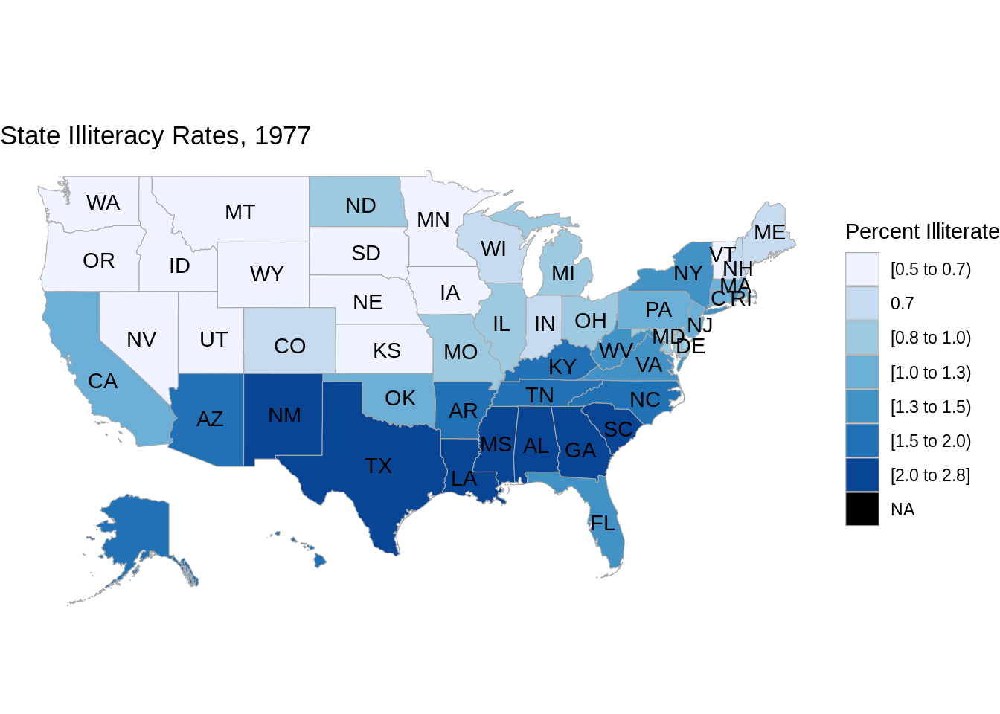
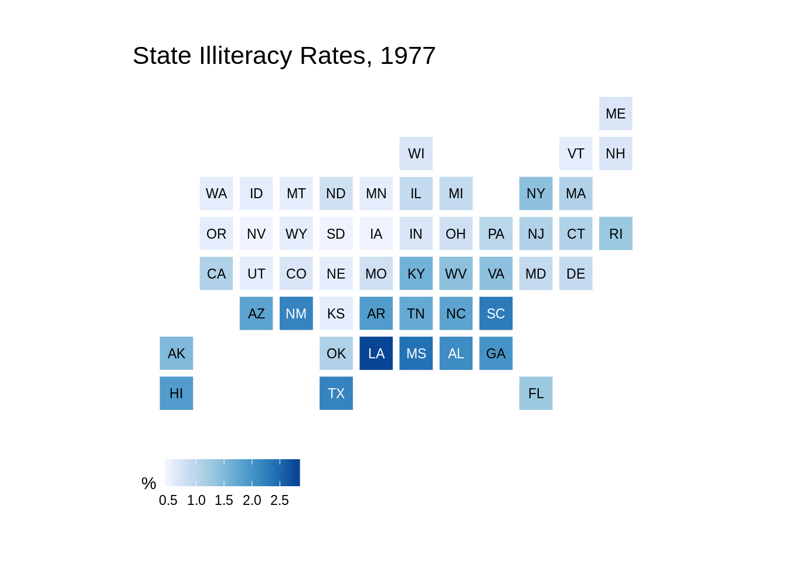
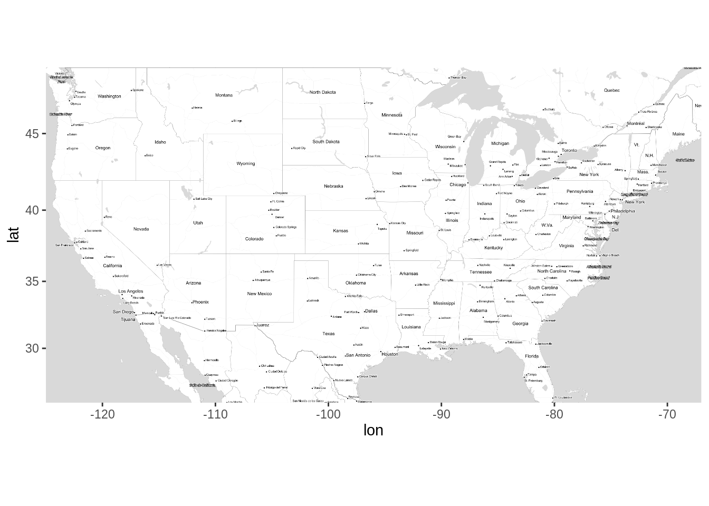
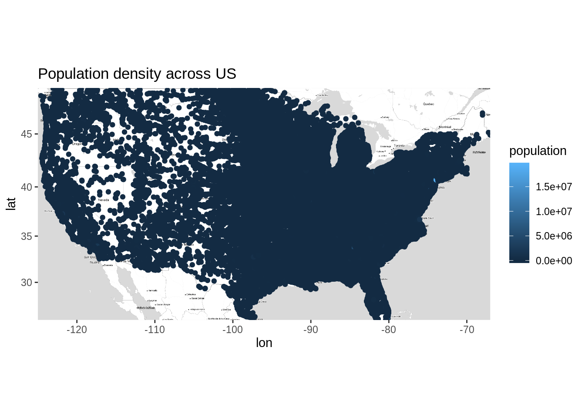
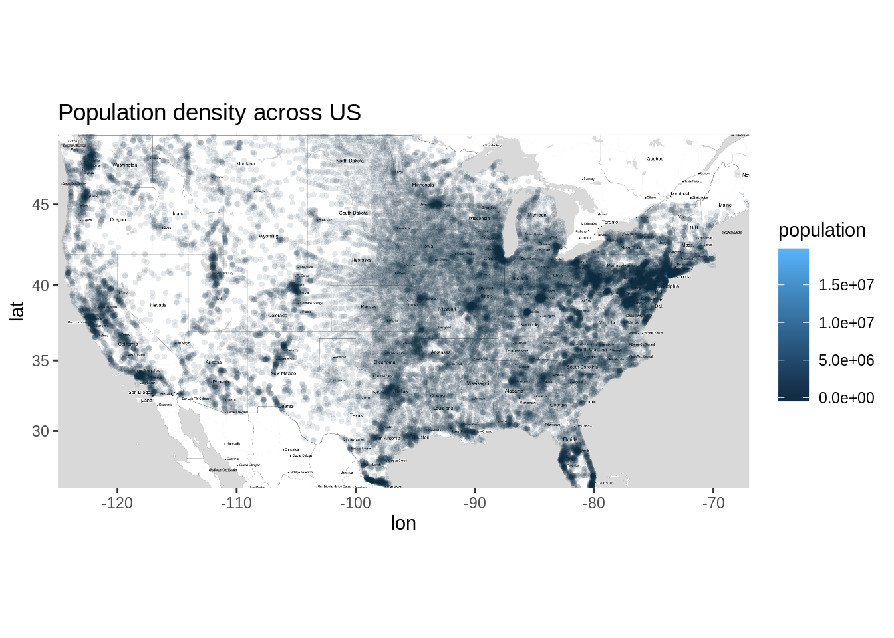
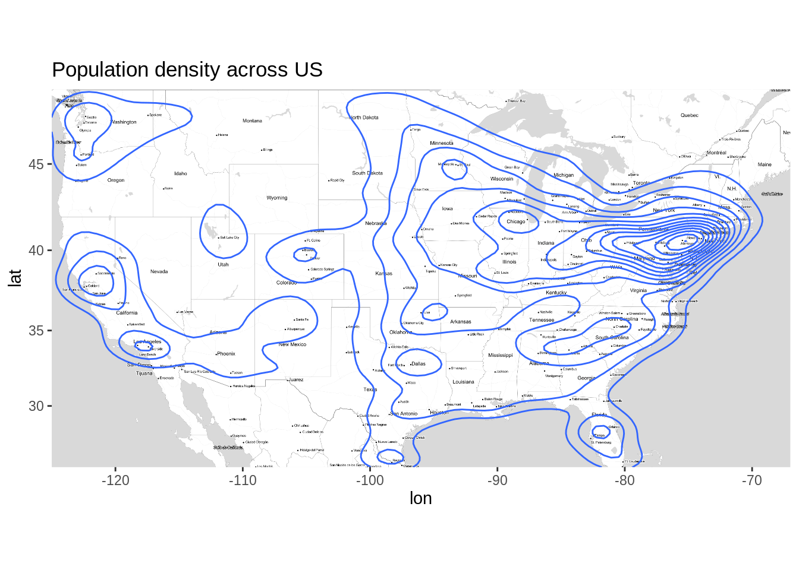
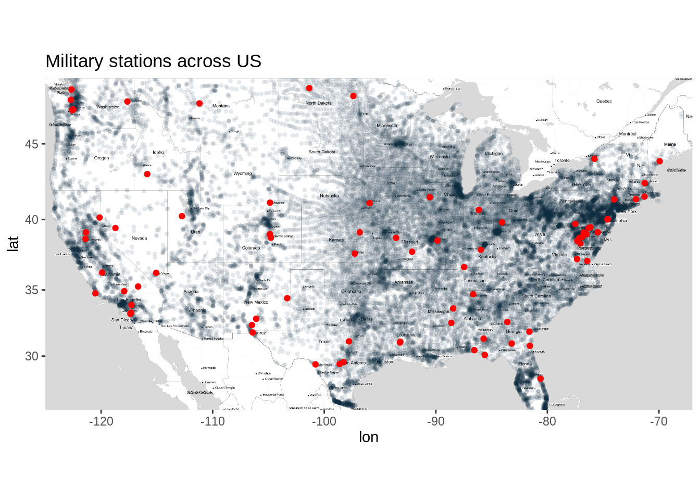
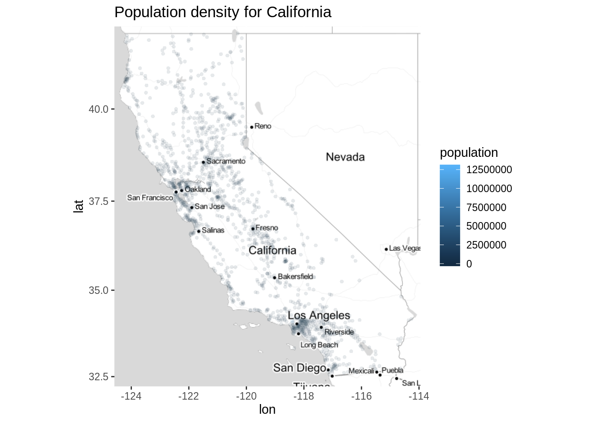

Chapter 4 Spatial Data
4.1 Choropleth maps
Choropleth maps use color to indicate the value of a variable within a defined region, generally political boundaries. “Mapping in R just got a whole lot easier” by Sharon Machlis (2017-03-03) offers a tutorial on using the tmap, tmaptools, and tigris packages to create choropleth maps. Note that with this approach, you will need to merge geographic shape files with your data files, and then map.
“Step-by-Step Choropleth Map in R: A case of mapping Nepal” walks through the process of creating a choropleth map using rgdal and ggplot2. (We have not followed either of these tutorials step-by-step… if you do, please provide feedback by submitting an issue).
The choroplethr package makes it simple to draw choropleth maps of U.S. states, countries, and census tracts, as well as countries of the world without dealing directly with shape files. The companion package, choroplethrZip, provides data for zip code level choropleths; choroplethrAdmin1 draws choropleths for administrative regions of world countries. The following is a brief tutorial on using these packages.
Note: You must install also install choroplethrMaps for choroplethr to work. In addition, choroplethr requires a number of other dependencies which should be installed automatically, but if they aren’t, you can manually install the missing packages that you are notified about when you call library(choroplethr): maptools, and rgdal, sp.
We’ll use the state.x77 dataset for this example:
library(tidyverse)
library(choroplethr)
# data frame must contain "region" and "value" columns
df_illiteracy <- state.x77 %>% as.data.frame() %>%
rownames_to_column("state") %>%
transmute(region = tolower(`state`), value = Illiteracy)
state_choropleth(df_illiteracy,
title = "State Illiteracy Rates, 1977",
legend = "Percent Illiterate")
Note: the choroplethr “free course” that you may come across arrives one lesson at a time by email over an extended period so not the best option unless you have a few weeks to spare.
4.2 Square bins
Packages such as statebins create choropleth style maps with equal size regions that roughly represent the location of the region, but not the size or shape.
Important: Don’t install statebins from CRAN; use the dev version – it contains many improvements, which are detailed in “Statebins Reimagined”.
# devtools::install_github("hrbrmstr/statebins")
library(statebins)
df_illit <- state.x77 %>% as.data.frame() %>%
rownames_to_column("state") %>%
select(state, Illiteracy)
# Note: direction = 1 switches the order of the fill scale
# so darker shades represent higher illiteracy rates
# (The default is -1).
statebins(df_illit, value_col="Illiteracy",
name = "%", direction = 1) +
ggtitle("State Illiteracy Rates, 1977") +
theme_statebins()
4.3 Longitude / Latitude data
Note that the options above work with political boundaries, based on the names of the regions that you provide. Such maps require packages with geographical boundary information. Longitude / latitude data, on the other hand, can be plotted simply as a scatterplot with x = longitude and y = latitude, without any background maps (just don’t mix up x & y!) The first part of “Data wrangling visualisation and spatial analysis: R Workshop” by C. Brown, D. Schoeman, A. Richardson, and B. Venables provides a detailed walkthrough of spatial exploratory data analysis with copepod data (a type of zooplankton) using this technique with ggplot2::geom_point().
If background maps are desired, there are many options. The tutorial mentioned above provides examples using the maps or sf packages. It is a highly recommended resource as it covers much of the data science pipeline from the context of the problem to obtaining data, cleaning and transforming it, exploring the data, and finally modeling and predicting.
Another good choice for background maps is ggmap, which offers several different map source options. Google Maps API was the go-to, but they now require you to enable billing through Google Cloud Platorm. You get $300 in free credit, but if providing a credit card isn’t your thing, you may consider using Stamen Maps instead, with the get_stamenmap() function. Use the development version of the package; instructions and extensive examples are available on the package’s GitHub page “Getting started Stamen maps with ggmap” will help you get started with Stamen maps through an example using the Sacramento dataset in the caret package.
4.3.1 Stamen Maps and ggmaps
Here is an example to get started with ggmap using get_stamenmap() to plot the longitude/latitude maps. The data for the following plots is available at https://simplemaps.com/data/us-cities. The get_stamenmap() function reqiures a bounding box, i.e the top, bottom, left and right latitude/longitude of the map you want to plot. For example, the latitude/longitude for US map are as follows:
You can find these values from https://www.openstreetmap.org. The other important parameters of this function are zoom and maptype. Higher the zoom level, the more detailed your plot will be. Beaware that ggmap connects to Stamen Map server to download the map, so if your bounding box is large and zoom level is high, it will have to download a lot of data and may take some time. There are differnt types of plots available via Stamen Map like terrain, watercolor, toner which can be set to maptype parameter according to your preference. You can find about avaiable options in help (?get_stamenmap). For the following examples the maptype is set to ‘toner-lite’.
Let’s plot the US map.

Great! We have the US map, now let’s use the US population data to see the population density across nation. Notice that we haven’t included Alaska in the map and hence will be removing the data from Alaska.
library(dplyr)
df <- read.csv(unz('resources/ggmap/data/uscities.zip', 'uscities.csv'))
# Removing data of Alaska from dataset
df <- df %>% filter(state_name != 'Alaska')# Population density across US using points
ggmap(usmap) +
geom_point(data = df,
mapping = aes(x = lng, y = lat, color = population)) +
ggtitle('Population density across US')
This is not good! Most of the points are overlapping and thus it is not easy to interpret what’s going on here. Let’s try alpha blending.
# Population density across US using points
ggmap(usmap) +
geom_point(data = df,
mapping = aes(x = lng, y = lat, color = population),
stroke= 0, alpha = 0.1) +
ggtitle('Population density across US')
That’s much better! We can now easily identify the areas where population density is more. You might have noticed there is no light blue dot visible on the plot. This is because it must be lying somewhere between those dense areas. One such location is New York, you can find this out by zooming the plot.
We can also look at popluation density using geom_density as follows
# Population density across US using Density_2d
ggmap(usmap) +
geom_density_2d(data = df,
mapping = aes(x = lng, y = lat, color = population)) +
ggtitle('Population density across US')
4.3.2 Mutilayerd plots with ggmaps
We can add multiple layers to the plot as described in earlier chapters. Let’s look at the location of military stations located across US along with population density.
# Location of Military units
df1 <- df %>% filter(military == TRUE)
ggmap(usmap) +
geom_point(data = df,
mapping = aes(x = lng, y = lat, color = population, text = city),
show.legend = F,
stroke= 0, alpha = 0.1) +
geom_point(data = df1,
mapping = aes(x = lng, y = lat , text = city),
show.legend = F,
color = 'red') +
ggtitle('Military stations across US')
Let’s zoom the map for state of California.
# California Boundaries
CAbox <- c(bottom = 32.213, top = 42.163 , right = -113.95, left = -124.585)
camap <- get_stamenmap(bbox = CAbox, zoom = 6, maptype = 'toner-lite')
df3 <- df %>% filter(state_name == 'California')
ggmap(camap) +
geom_point(data = df3,
mapping = aes(x = lng, y = lat, color = population),
stroke= 0, alpha = 0.1) +
ggtitle('Population density for California')
4.3.3 Getting Deeper
This was just a glimpse of what you can do with ggmaps using the get_stamenmap(). Note that Stamen Maps is not limited to US and can be used to plot any part of the world. If you liked this alternative to Google Maps API, I highly recommend you to check the Stamen Maps website http://maps.stamen.com for more details.